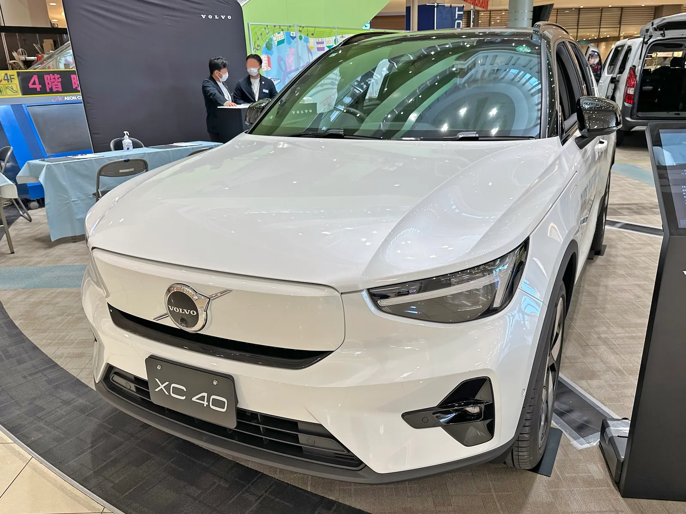
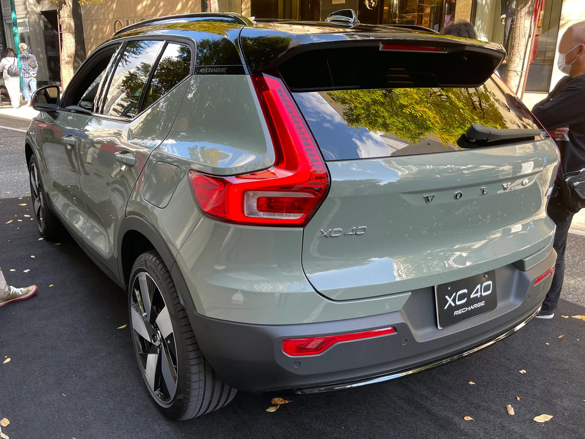
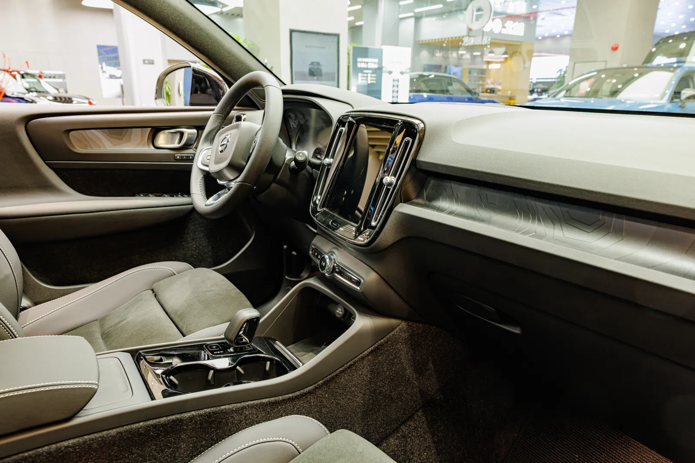
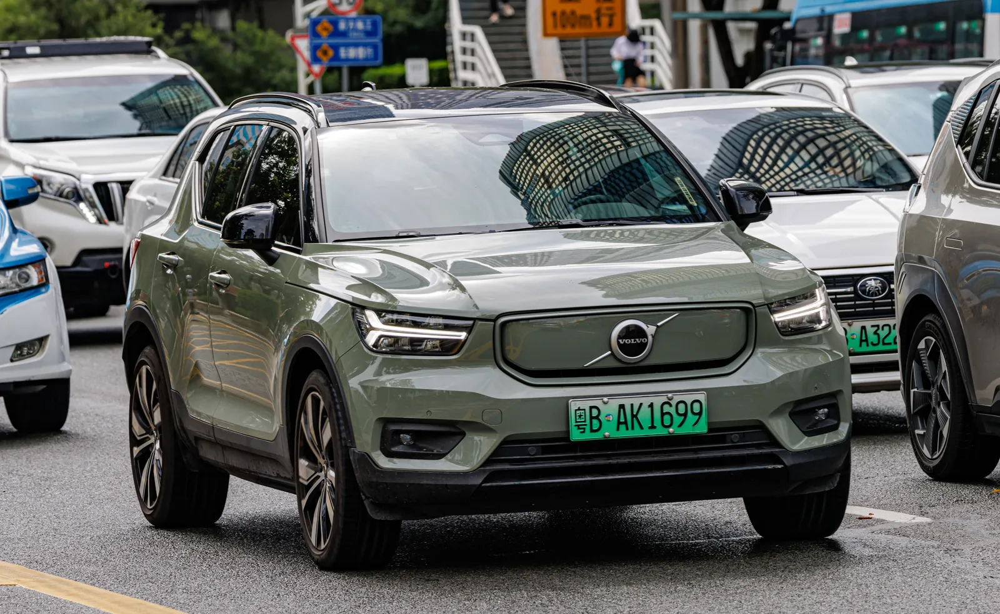

▲ 볼보는 미국 시장에서 전기 SUV EX40의 단종을 결정했다고 밝혔다 ⓒ Wikimedia Commons
2년 전 XC40의 이름을 바꿔가며 야심 차게 밀었던 순수 전기 SUV가, 결국 미국에서 조용히 자취를 감춘다.
여러 외신 보도에 따르면 볼보는 미국 시장에서 판매 중인 순수전기 SUV EX40을 단종하기로 했다. 2024년 기존 'XC40 리차지'를 EX30·EX90과 이름 체계를 맞추기 위해 EX40으로 개명한 지 2년 만이다. 대신 가솔린·마일드하이브리드로 팔리는 XC40은 2027년형을 건너뛰고, 2028년형으로 대대적인 리프레시를 거쳐 살아남는다.
1. 무엇이 단종되나 — EX40과 XC40의 관계
먼저 헷갈리기 쉬운 이름부터 정리하자. XC40은 2018년 출시된 볼보의 소형 SUV로, 가솔린·마일드하이브리드·플러그인하이브리드·순수전기 등 다양한 파워트레인으로 판매돼왔다. 이 중 순수전기 버전은 원래 'XC40 리차지 트윈'으로 불리다가, 2024년 볼보가 전기차 전용 이름 체계(EX30·EX40·EX90)를 도입하면서 EX40으로 개명됐다.
즉 이번에 단종되는 것은 차체 자체가 아니라 순수전기 버전인 EX40이다. 가솔린·하이브리드 XC40은 이름과 파워트레인을 유지한 채 계속 판매되며, 오히려 2028년형으로 대대적인 리프레시를 거친다.
📍 왜 미국에서만인가
보도에 따르면 이번 단종은 미국 시장에 한정된다. 유럽 등지에서는 EX40(현지에서는 여전히 'XC40 리차지'로도 불림) 판매가 이어질 것으로 전해졌다. 미국 내 전기차 수요 둔화와 수입 자동차에 부과되는 관세 부담이 복합적으로 작용했다는 분석이 나온다. 외신들은 특히 7,500달러 규모의 연방 전기차 세액공제가 종료된 점이 소형 전기 SUV인 EX40의 가격 경쟁력을 더 약화시켰다는 점도 함께 지목한다.

▲ 순수전기 버전은 'XC40 리차지'에서 'EX40'으로 개명된 바 있다 ⓒ Wikimedia Commons
2. 단종 이유로 꼽히는 것들
확정된 단일 이유가 공식 발표된 것은 아니지만, 외신들이 공통으로 지목하는 배경은 두 가지다.
| 요인 | 내용 |
|---|---|
| 수요 부진 | 미국 내 순수전기차 수요 둔화 속, EX40의 소형 SUV 세그먼트 경쟁이 치열해짐 |
| 관세 부담 | 수입 완성차에 부과되는 관세가 유럽·벨기에 생산분인 EX40의 가격 경쟁력을 약화시켰다는 분석 |
| 라인업 재편 | 더 큰 체급의 EX60을 새 전기 SUV 진입점으로 세우는 전략적 선택 |
볼보의 제품·기술 커뮤니케이션 담당자 토머스 매킨타이어 슐츠(Thomas McIntyre Schultz)는 켈리블루북(KBB) 등을 통해 "우리는 항상 제품 구성을 정할 때 고객의 요구를 평가하며, 미국 운전자의 필요에 맞는 강력한 전기 SUV 라인업을 갖추고 있다고 본다. 현재 EX60 P6가 볼보 전기 SUV의 새로운 진입점으로, 기존 EX40(5만 6,545달러)보다 다소 높은 5만 9,795달러의 경쟁력 있는 시작가를 제공하면서도 미국 고객이 원하는 더 많은 공간과 주행거리를 제공한다"고 밝혔다. 다만 이 공식 답변에서도 볼보는 관세나 전기차 수요 둔화를 단종의 직접적 사유로 명시하지는 않았다. 즉 관세·수요 부진은 외신들이 종합적으로 지목하는 배경일 뿐, 볼보가 공식적으로 인정한 단종 사유는 아니다.
3. 대체 모델 EX60은 어떤 차인가
EX40의 빈자리는 한 체급 위인 EX60이 메운다. 보도에 따르면 EX60은 EX40보다 넓은 실내 공간과 더 긴 주행거리를 갖춘 중형 전기 SUV로, 볼보의 새로운 SPA2 기반 전동화 라인업 중 하나다.
| 모델 | 시작가 | 포지션 |
|---|---|---|
| EX40 (단종 예정) | 5만 6,545달러 | 소형 순수전기 SUV |
| EX60 (신규 진입점) | 5만 9,795달러 | 중형 순수전기 SUV |
가격 차이는 약 3,250달러로, 체급이 커지는 것을 고려하면 상승 폭이 크지 않다는 평가가 나온다. 다만 EX40을 찾던 소비자 입장에서는 더 크고 비싼 차를 사거나, 아예 순수전기 대신 하이브리드 XC40으로 눈을 돌려야 하는 상황이 됐다.
✅ 기존 EX40 오너·구매 예정자가 체크할 점
· 현재 재고로 남은 EX40은 2026년형이 마지막 판매 물량이 될 가능성이 높음
· 서비스·부품 공급은 볼보의 통상적인 단종 차량 지원 정책을 따를 것으로 예상됨
· 유럽 등 해외 시장에서 EX40(XC40 리차지)을 계속 구매할 수 있다는 점은 국내 병행수입 매물에는 영향이 제한적
4. 2028년형 XC40, 무엇이 바뀌나
흥미로운 대목은 정작 가솔린·하이브리드 XC40이 2027년형 없이 2028년형으로 건너뛰며 대대적인 변화를 예고했다는 점이다. 2018년 출시 이후 9년 차를 맞는 1세대 XC40의 노후화를 늦추기 위한 상품성 개선으로 풀이된다.
| 부위 | 변경 내용 |
|---|---|
| 전면부 | '토르의 망치' LED 헤드라이트 새 해석, 새 그릴·범퍼·후드·펜더 |
| 후면부 | 새 테일램프, 리디자인된 범퍼 |
| 파워트레인·플랫폼 | 기존 유지 (변경 없음) |
| 모델 연도 | 2027년형 없이 2028년형으로 출시 |
즉 겉모습은 크게 새로워지지만 기계적 구성은 유지되는 페이스리프트에 가깝다. 파워트레인과 섀시를 그대로 가져가면서 디자인 신선도만 끌어올리는, 단종 대신 선택된 생존 전략인 셈이다.

▲ XC40 계열의 실내. 2028년형 리프레시는 외장 위주 변경으로 전해졌다 ⓒ Wikimedia Commons
5. 관전 포인트 — 볼보 전동화 전략의 방향
이번 EX40 단종은 단순한 판매 부진 대응을 넘어, 볼보의 미국 시장 전동화 속도 조절로 읽힌다. EX30·EX90 등 다른 전기 모델의 판매 추이, 관세 정책 변화, 하이브리드 수요 회복 여부에 따라 향후 라인업 재편이 추가로 이뤄질 가능성이 있다.
✅ 앞으로 지켜볼 변수
· EX60의 실제 판매 개시 시점과 초기 반응
· 2028년형 XC40의 국내 출시 여부(현재 국내 미판매)
· 관세 상황 변화에 따른 볼보의 추가 라인업 조정 가능성
· 다른 완성차 업체들의 미국 내 전기차 라인업 축소 흐름 동반 여부
관련 보도 원문은 InsideEVs에서 확인할 수 있다. InsideEVs 원문 바로가기

▲ EX40(XC40 리차지)은 유럽 등 다른 시장에서는 판매가 계속될 전망이다 ⓒ Wikimedia Commons
6. 요약
볼보가 미국 시장에서 순수전기 SUV EX40의 단종을 결정한 것으로 보도됐다. 약한 전기차 수요와 관세 부담이 배경으로 거론되며, 더 크고 항속거리가 긴 EX60이 새로운 전기 SUV 진입점 역할을 맡는다.
반면 가솔린·하이브리드 XC40은 2027년형을 건너뛰고 2028년형으로 대대적인 외장 리프레시를 거쳐 살아남는다. 파워트레인과 플랫폼은 유지한 채 디자인만 새로워지는 방식이다.
다만 이는 미국 시장에 한정된 조정으로, 유럽 등에서는 EX40 판매가 이어질 전망이다. 관세 정책과 전기차 수요 흐름에 따라 볼보의 추가 라인업 재편 가능성도 열려 있다.